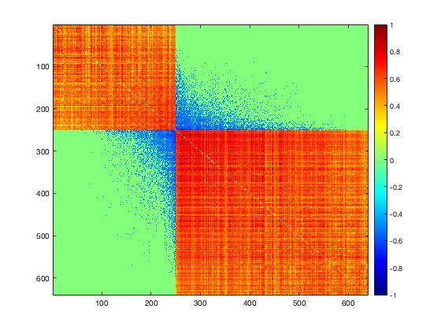

Real data example
Contents
Step 1: detect communities as the backbone ICN structure (load the results)
clear load('laml_s3_step1.mat'); % Raw network figure;imagesc(Cor_perm);colormap jet;colorbar;snapnow % Diagonals for i=1:16 Diag{i}=Cor_perm(A{i},A{i}); end % Off-diagnals Off_1vec = []; for i=1:15 for j=(i+1):16 Off{i,j} = Cor_perm(A{i},A{j}); CC = Cor_perm(A{i},A{j}); Off_vec{i,j} = CC(:); VV = CC(:); Off_1vec = [Off_1vec VV']; end end idx = 1:size(Cor_perm,2); idx_select2 = [A{1:16}]; idx_left2 = setdiff(idx,idx_select2); % reorganized network figure;imagesc(Cor_perm([idx_select2 idx_left2], [idx_select2 idx_left2]));colormap jet;colorbar;snapnow
Step 2: Test interconnectivity by KL, choose cluster 7 and 8 as an example
Null graph
clu00 = Cor_perm(idx_left2,idx_left2); % figure;imagesc(clu00);colormap jet;colorbar;snapnow % Random samples i=7; j=8; figure;imagesc(Cor_perm([A{7} A{8}], [A{7} A{8}]));colormap jet;colorbar;snapnow whole = squareform(clu00); true = randsample(whole,size(Off_vec{i,j},1)); null = Off_1vec; width= 0.001; addpath('/Users/qwu/Downloads/Don/Interconnected') s = Off_vec{i,j}'; [P,R]=KLtest(s,null,true,0.05,width); if R==1 fprintf('cluster %d and %d are interconnected', i,j); else fprintf('cluster %d and %d are not interconnected', i,j); end Vec12 = Off_vec{i,j}; Vec12_pos = Vec12(Vec12>0); prop = size(Vec12_pos,1)/size(Vec12,1); prop(prop<0.5)=-1; prop(prop>0.5)=1;
cluster 7 and 8 are interconnected
Step 3: rearrange and identify connecting edges between community 7 and 8
C1 = Diag{i};
C2 = Diag{j};
C12 = Off{i,j};
lambda0=0.8;
r=0.1:0.005:0.8;
r_max=InterCut(C1,C2,C12,r,lambda0);
r_cut = r_max(1);
if prop==-1
direction = 'neg';
else
direction = 'pos';
end
[IR,IC,C1_sort,C2_sort,C12_sort,C] = InterRearrange(C1,C2,C12,r_max,direction);
figure;imagesc(C);colormap jet;c=colorbar;snapnow
caxis([-1 1])
